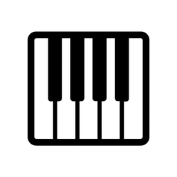

Relâchez le fichier pour le charger

Hans Zimmer • 0 notes
[tu] o p
C4 D4 E4
Installez le périphérique virtuel VB-Cable pour relier la sortie du piano à une entrée microphone Windows.
CABLE Input
CABLE Output